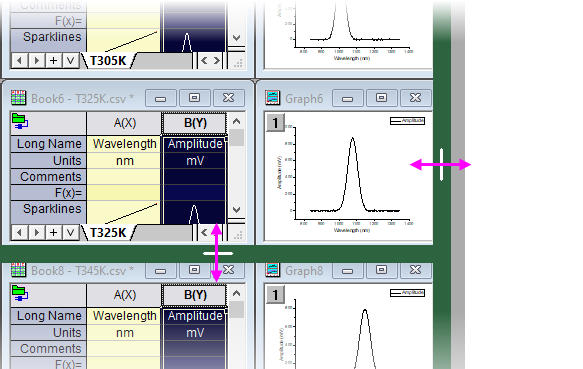

Grundlegende Operationen der Unterfenster
Operate-ChildWindow-Basic
Dieses Thema behandelt grundlegende Operationen, die auf alle Origin-Unterfenster angewendet werden können.
Fenster verschieben und ihre Größe verändern
- Um ein Fenster zu bewegen, verschieben Sie die Titelleiste des Fensters mit der Maus.
- Um manuell die Größe eines Fensters zu verändern, ziehen Sie an einer Ecke des Fensters mit der Maus.
- Maximieren Sie ein Fenster durch Klicken auf die Schaltfläche Maximieren in der oberen rechten Ecke des Fensters.
- Minimieren Sie ein Teilfenster durch Klicken auf die Schaltfläche Minimieren in der oberen rechten Ecke des Fensters.
 |
Die in Origin 2023b gespeicherten OPJU-Dateien skalieren Arbeitsbereich und Unterfenster besser, wenn sie auf einem Bildschirm mit unterschiedlichen Auflösungen und DPI geöffnet werden, egal ob die OPJU im maximierten oder nicht maximierten Arbeitsbereich gespeichert ist. Die Funktionalität wird mit den Systemvariablen @MFRLA und @SRWS gesteuert/eingestellt.
|
Fenster ausrichten
Fenster, die in Zeilen und Spalten angeordnet werden, können ausgerichtet, d. h. "eingerastet" werden. Das heißt, Sie werden entlang einer gemeinsamen Kante gezogen und in ihrer Größe verändert. Das visuelle Kennzeichen zum Verwenden dieses "Einrastens" ist ein grüner Balken.
- Sie können diese Funktion ein- und ausschalten, indem Sie im Menü Fenster: Fenster ausrichten (Strg+F12) verwenden oder mit der Systemvariablen @MDI steuern. Diese Einstellung bleibt zwischen den Sitzungen erhalten.
-
- 
- Um die Größe eines einzelnen Fensters ohne "Einrasten" zu verändern, drücken Sie die Shift-Taste, während Sie den Fensterrahmen ziehen.
- Wenn angeordnete Fenster den Arbeitsbereich abdecken, tauschen Sie zwei Fensterpositionen aus, indem Sie die ALT-Taste drücken, während Sie die Titelleiste des Fensters ziehen.
- Um ein Fenster in einem leeren Bereich auszurichten, drücken Sie während des Ziehens die Shift-Taste.
Fenster anordnen
Zusätzlich zu den bekannten Fensteroperationen Alle anordnen (Fenster: Alle anordnen) und Teilen (Fenster: Horizontal teilen/Vertikal teilen) gibt es einen Dialog Fenster anordnen (X-Funktion = winarrange) zum systematischen Anordnen von Unterfenstern in einer benutzerspezifischen Abfolge.
Siehe weitere Informationen unter Fenster anordnen.
Fenster verbergen und löschen
- Klicken Sie auf die Schaltfläche Schließen
 oben rechts im Fenster. Klicken Sie auf Verbergen, um das Fenster aus dem Arbeitsbereich zu entfernen, aber NICHT aus dem Origin-Projekt zu löschen. Klicken Sie auf Löschen, um das Fenster dauerhaft aus dem Origin-Projekt zu löschen.
oben rechts im Fenster. Klicken Sie auf Verbergen, um das Fenster aus dem Arbeitsbereich zu entfernen, aber NICHT aus dem Origin-Projekt zu löschen. Klicken Sie auf Löschen, um das Fenster dauerhaft aus dem Origin-Projekt zu löschen.
|
Seit Origin 2022b können Sie das Löschen eines Arbeitsmappenfensters mit Hilfe des Menüs Bearbeiten: Rückgängig machen oder die Tastenkombination Strg + Z rückgängig machen. Die verwandten Datenzeichnungen werden ebenfalls wiederhergestellt.
|
- Seit Origin 2020 können Sie die LabTalk-Systemvariable @PEN verwenden, um die Anzahl der gezeigten Fenster zu steuern, wenn Sie zwischen den Ordner des Projekt Explorers wechseln. Standardmäßig zeigt Origin die fünf zuletzt verwendeten Fenstern an.
- Klicken Sie mit der rechten Maustaste auf das Fenstersymbol im Projekt Explorer und wählen Sie Fenster verbergen oder Fenster löschen im Kontextmenü.
- Schalten Sie zwischen Fenster zeigen und Fenster verbergen um, indem Sie doppelt auf das Fenstersymbol im Projekt Explorer klicken.
|
Wenn Sie auf die Schaltfläche Schließen des Fensters klicken, werden Sie von Origin gefragt, ob Sie das Fenster verbergen oder löschen möchten. Um dieses Verhalten zu ändern (und die Frage zu überspringen):
- Wählen Sie im Menü Einstellungen: Optionen.
- Wählen Sie im Dialog Optionen die Registerkarte Öffnen/Schließen und legen Sie in der Gruppe Schließen von Fenstern fest, wie Origin reagieren soll, wenn Sie auf die Schaltfläche Schließen eines bestimmten Fenstertyps klicken.
|
Indikator für aktives Fenster
Ab Origin 2018b ist das aktive Unterfenster -- das Fenster, in dem die Zeichen- und Analyseoperationen durchgeführt werden -- von einem farbigen Rahmen umgeben, um das aktive Fenster auffälliger zu machen. Sie können die Eigenschaften dieses Rahmens mit den "@-Systemvariablen" @AWC (Farbe) und @AWI (Stil) benutzerdefiniert anpassen.
-

|
Die Systemvariablen @AWC und @AWI sind dauerhafte Systemvariablen (sie sind in die Registry geschrieben). Daher müssen Sie NICHT mehr tun als einen Wert mit Hilfe des Skriptfensters festlegen. Der Wert bleibt über die Sitzungen erhalten. Wählen Sie einfach Fenster: Skriptfenster, geben Sie einen Wert in die Befehlszeile ein und drücken Sie Enter (z. B. @AWC=color(255,0,0)).
|
Zurück zum letzten Fenster
- Wählen Sie Fenster: Zurück zum letzten Fenster im Menü.
- Drücken Sie die Tastenkombination Strg + Alt + Z.
Alle Origin-Fenster, einschließlich Diagramm, Matrix, Arbeitsblatt, Layout, Notizen, Excel-Fenster, unterstützen diese Operation, die auch als Ping Pong bezeichnet wird.
Fenster duplizieren
- Wählen Sie Fenster: Duplizieren im Origin-Menü.
- Klicken Sie auf die Schaltfläche Öffnen
 in der Symbolleiste Standard.
in der Symbolleiste Standard.
Origin benennt duplizierte Fenster mit Hilfe dieser Standardbenennungssyntax:
StandardNameN
wobei N der kleinsten verfügbaren Zahl zugewiesen wird, die nicht für einen anderen Fensternamen des gleichen Typs im Projekt verwendet wird.
| Fenster |
Standardname |
|
Arbeitsmappe
|
MappeN
|
|
Diagramm
|
DiagrammN
|
|
Matrix
|
MMappeN
|
|
Layoutfenster
|
LayoutN
|
Weitere Informationen finden Sie unter Benennungsregeln für Origin-Unterfenster.
- Um Fenster im Projekt Explorer zu duplizieren, drücken Sie die Strg-Taste und ziehen Sie an den ausgewählten Fenstern.
|
Sie können Arbeitsmappen oder Matrixmappen mit oder ohne Daten duplizieren, indem Sie mit der rechten Maustaste auf die Fenstertitelleiste klicken und eine Option im Kontextmenü wählen.
Bitte beachten Sie, dass, wenn Sie ab Version Origin 2020 die Option Ohne Daten duplizieren auswählen, um das Fenster zu duplizieren, nur die Rohdaten gelöscht werden, die Links in den Zellen aber (wie Zellenreferenzen, Zellenformel etc.) zur weiteren Verwendung erhalten bleiben. Sie können mit der Systemvariable @DkL zum älteren Verhalten zurückkehren. Dadurch werden auch die Zellenverknüpfungen gelöscht.
|
Ein Fenster aktualisieren
Wann immer Sie den Inhalt eines Grafikfensters oder eines Arbeitsblatts ändern oder einen Teil eines zuvor verdeckten Fensters anzeigen, zeichnet Origin den betroffenen Bereich des Fensters automatisch neu. Um das aktive Fenster manuell zu aktualisieren, klicken Sie auf die Schaltfläche Aktualisieren  in der Symbolleiste Standard.
in der Symbolleiste Standard.
Hinweis: Wenn ein Diagramm einen großen Datensatz enthält, ist die Aktualisierung zeitaufwändig. Wenn Sie einen Teil eines verborgenen Fensters aufdecken oder die Größe des Fensters verändern und es dauert länger als 500 ms für die Neuzeichnung, verwendet Origin 2018 einen Bitmap-Puffer, um den Vorgang des Neuzeichnens zu vermeiden und die Geschwindigkeit zu verbessern. In diesem Fall sollten Sie beim Verändern der Größe des Fensters sehen, dass der Diagramminhalt nicht in Echtzeit aktualisiert wird und die Qualität "schlecht" sein könnte, weil das Bitmap zum Strecken/Komprimieren verwendet wird. Die Qualität wird im Anschluss an das Ändern der Größe aktualisiert.
Speichern eines Fensters in einer Datei
Eine Vorlage wird ohne Daten gespeichert. Eine Fensterdatei wird mit Daten gespeichert.
- Wählen Sie im Origin-Menü (wählen Sie für Notizfenster und Excel-Fenster die Option bzw. ); oder klicken Sie mit der rechten Maustaste auf das Fenstersymbol im Projekt Explorer und wählen Sie im Kontextmenü, um den Dialog Fenster speichern unter zu öffnen.
- Klicken Sie mit der rechten Maustaste auf die Titelleiste und wählen Sie im Kontextmenü (wählen Sie für Notizfenster und Excel-Fenster die Option bzw. ), um den Dialog Fenster speichern unter zu öffnen.
Origin speichert das Fenster als eine Origin-Unterfensterdatei mit der passenden Dateierweiterung: Arbeitsmappe (.ogw(u)), Diagramm (.ogg(u)), Matrix (.ogm(u)) und Notizen (.txt).
|
Origin wendet einige nützliche Pfadoptionen zum Speichern von Fenstern in der Auswahlliste Dateipfad an.
|
- Aktivieren Sie das Diagramm-/Arbeitsmappen-/Matrixfenster und wählen Sie Datei: Vorlage speichern unter, um den Dialog template-saveas zu öffnen.
- Klicken Sie mit der rechten Maustaste auf die Titelleiste des Fensters, um im Kontextmenü Vorlage speichern unter auszuwählen und den Dialog template-saveas zu öffnen. Wenn Sie im Kontextmenü Vorlage speichern wählen, wird diese Vorlage gespeichert und als Standardvorlage verwendet.
- Aktivieren Sie das gewünschte Arbeitsmappenfenster, wählen Sie Datei: Arbeitsmappe aös Analysevorlage speichern oder klicken Sie mit der rechten Maustaste auf die Titelleiste des Fensters, um im Kontextmenü Als Analysevorlage speichern auszuwählen und den Dialog Fenster speichern unter auszuwählen. Das Fenster wird als eine Analysevorlagendatei (*.ogw(u)) ohne Daten gespeichert.
|
Seit Origin 2019b unterstützt Origin auch das Speichern einer Arbeitsmappe ohne Operation als eine Analysevorlage. Wenn Sie im Hauptmenü Datei: Arbeitsmappe als Analysevorlage speichern oder im Kontextmenü Datei: Arbeitsmappe als Analysevorlage speichern gewählt haben, wird zuerst ein Dialog angezeigt, in dem Sie entscheiden können, wie die Daten gelöscht werden sollen.
Wählen Sie die Option und klicken Sie dann auf OK, um den Dialog Fenster speichern unter zu öffnen und die Analysevorlage zu speichern.
Wenn Sie keine Daten löschen möchten, brechen Sie ab und wählen Sie stattdessen im Menü Fenster speichern unter, um die Arbeitsmappe als Fensterdatei zu speichern.
In älteren Versionen dürfen Sie eine Arbeitsmappe nicht ohne Operation als Analysevorlage speichern, aber Sie können die Arbeitsmappe immer als eine Fensterdatei speichern und dann auch im Dialog Stapelverarbeitung für wiederkehrende Aufgaben verwenden.
|
Siehe auch:
Fensterdateien im Origin-Projekt öffnen
Um ein Fenster von einer Datei aus zu öffnen:
- Wählen Sie Datei: Öffnen im Origin-Menü.
- Klicken Sie auf die Schaltfläche Öffnen
 auf der Symbolleiste Standard.
auf der Symbolleiste Standard.
- Klicken Sie mit der rechten Maustaste auf einen leeren Bereich des Origin-Arbeitsbereichs und wählen Sie Datei: Öffnen im Kontextmenü.
Wählen Sie den zu öffnenden Fenstertyp und wählen Sie dann eine Datei. Das Fenster wird Teil des aktuellen Projekts.
|
Unter dem Element des Dateityps befindet sich ein Kontrollkästchen Öffnen als nur lesbar : Dieses Kontrollkästchen ist nur verfügbar, wenn eine OPJ- oder eine Excel-Datei ausgewählt ist. Der Versuch, eine nur lesbare Datei zu speichern, verursacht eine Fehlermeldung.
|
|
Das Kontrollkästchen Info zeigen unten im Dialog Öffnen kann bestimmen, ob Kommentare gezeigt werden, die in OPJ-Dateien gespeichert werden können.
|
Dateien per Drag&Drop öffnen
| Dateityp |
Was passiert, wenn die Datei in Origin gezogen wird |
| OPJ |
Wenn das aktuelle Projekt gespeichert und keine Änderungen nach dem Speichern gemacht wurden, wird die .opj-Datei an das aktuelle Projekt angehängt. Ansonsten wird das aktuelle Projekt geschlossen und das per Drag&Drop in den Arbeitsbereich gezogene Projekt wird geöffnet. |
| OGG, OGW, OGM |
Öffnet .ogg-, .ogw- und .ogm-Dateien in Origin. |
| OTP, OTW, OTM |
Öffnet die Vorlagendateien in Origin. |
| OIS |
Installiert das Dialogdesign, so dass es in den Menüs, dem verbundenen Dialog, LabTalk-Skripts und dem Dialog Designs verwalten verfügbar wird. Die Designdatei wird im Unterordner \Themes\AnalysisAndReportTable in Ihrem Anwenderdateiordner gespeichert. |
| FDF |
Installieren der Anpassungsfunktion
Wenn die Funktionsdatei in Origin 2017 oder älteren Versionen gespeichert wird, wird während der Installation ein Dialog angezeigt, der Sie fragt, in welche Kategorie die Datei eingeordnet werden soll. Bei Dateien, die in Origin 2018 und nachfolgenden Versionen gespeichert werden, wird die Funktionsdatei in die gleiche Kategorie kopiert, das sie die Kategorieinformationen bereits während des Erstellens oder Speichern erhalten.
In allen anderen Versionen wird ein weiterer Dialog angezeigt, der Sie fragt, ob die Datei in den Unterordner \FitFunc in Ihrem Anwenderdateiordner kopiert werden soll.
|
| OXF |
Installiert die Anpassungsfunktion. |
| OPX, OPK |
Installiert das Paket. Es wird in der installierten .opx-Liste des Hilfsmittels Packdateien verwalten gezeigt. |
| OTH |
Installieren des Arbeitsblatts- oder Diagrammdesigns Die Datei wird in den Unterordnern \Themes\Worksheet oder \Themes\Graph in Ihrem Anwenderdateiordner gespeichert und im Dialog Designs verwalten gezeigt. |
| C, CPP, H, OGS |
Die Datei wird im Code Builder geöffnet. |
Fenster befestigen
Das verankerte Fenster kann das Anordnen der Fenster überspringen.
- Klicken Sie mit der rechten Maustaste auf den Fensterheader und wählen Sie im Kontextmenü Fenster befestigen.
- Aktivieren Sie das Fenster und klicken Sie auf die Schaltfläche Aktives Fenster verankern
 auf der Symbolleiste Ordner und Fenster.
auf der Symbolleiste Ordner und Fenster.
- Aktivieren Sie das Fenster und führen Sie @LWP = 1 im Skriptfenster aus, um es zu verankern.
- Aktivieren Sie das verankerte Fenster und klicken Sie auf die Schaltfläche Aktives Fenster verankern auf der Symbolleiste Ordner und Fenster.
- Klicken Sie auf Fenster lösen
 im Fensterheader, um die Befestigung aufzuheben.
im Fensterheader, um die Befestigung aufzuheben.
Verankerte Fenster beim Wechseln von Ordnern beibehalten
Seit 2023b bleiben verankerte Fenster beim Wechseln von Ordnern im Arbeitsbereich. Setzen Sie die Systemvariable @pws = 0, um zum alten Verhalten zurückzukehren, so dass das verankerte Fenster nur in seinem eigenen Ordner gezeigt wird.
Wenn das verankerte Fenster sich nicht im eigenen Ordner befindet:
- Seine Ordnerinformationen werden im Titel des verankerten Fensters gezeigt.
- Das Lösen der Verankerung lässt das verankerte Fenster im aktuellen Ordner verschwinden.
- Um zum eigenen Ordner des frei beweglichen Fenster zurückzugehen, klicken Sie auf die Schaltfläche Zum ursprünglichen Ordner wechseln
 auf der Symbolleiste Ordner und Fenster oder wählen Sie Zum ursprünglischen Ordner wechseln im Kontextmenü der Fenstertitelleiste.
auf der Symbolleiste Ordner und Fenster oder wählen Sie Zum ursprünglischen Ordner wechseln im Kontextmenü der Fenstertitelleiste.